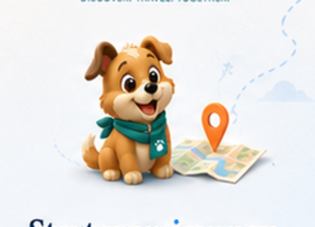

Musa Brand — Route / Map
Delhi

Triund
2,875 m
Snowline
Viewpoint
Jungle Café
Food Stop
Bhagsu Waterfall
Trek Point
Mcleod Ganj
Rest Stop
Naddi Viewpoint
Scenic Spot
Shiva Café
Cafe · 3.2 km
Kangra Devi Temple
Temple · 8.7 km
Delhi → Triund
482 km · 12 h 45 min
Smart Route Overlap
+124
3D
Places along the way
View all
Food
Cafe
Viewpoint
Temple
Trek
More
Musa Brand — POI Details
Food Stop
Jungle Café
Dharamkot, Himachal Pradesh
★ 4.6
(128 reviews)
·
Open now
A cozy mountain café with amazing views, local food and warm vibes.
Budget Friendly
Local Favorite
Good for Families
3.2 km
from route
10-15 min
detour
350+
saved by travelers
Photos by travelers
See all
Public photos from real travelers
Save
Add Memory